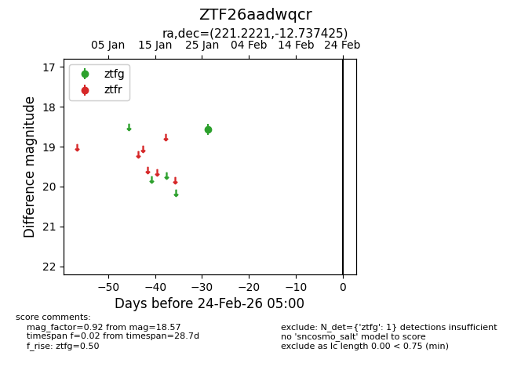
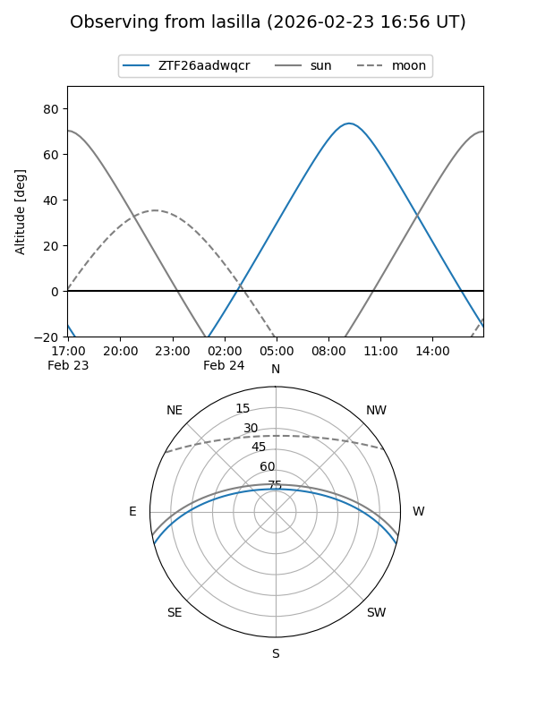
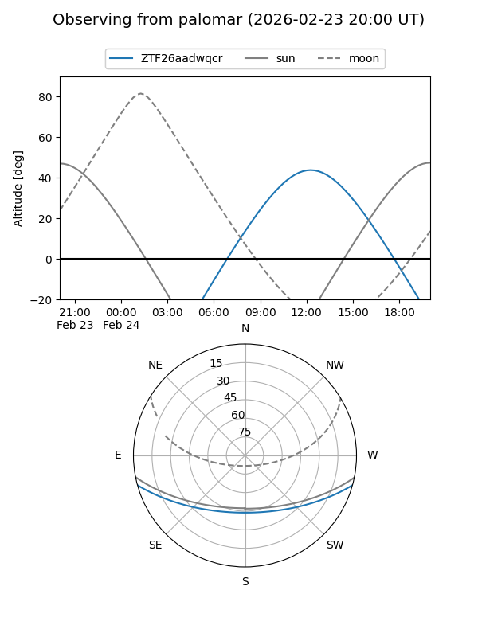

ZTF26aadwqcr
Target ZTF26aadwqcr at 2026-01-28 13:31
Aliases and brokers:
FINK: link
Lasair: link
ALeRCE: link
alt names
ZTF26aadwqcr (ztf,fink_ztf)
Coordinates:
equatorial (ra, dec) = 221.2221,-12.73743
equatorial (HMS+DMS) = 14:44:53.31,-12:44:14.73
galactic (l, b) = (341.1899,+41.55533)
Flags:
Photometry:
last ztfg=18.57
1 ztfg detections
Lightcurve

Visibility


Additional plots